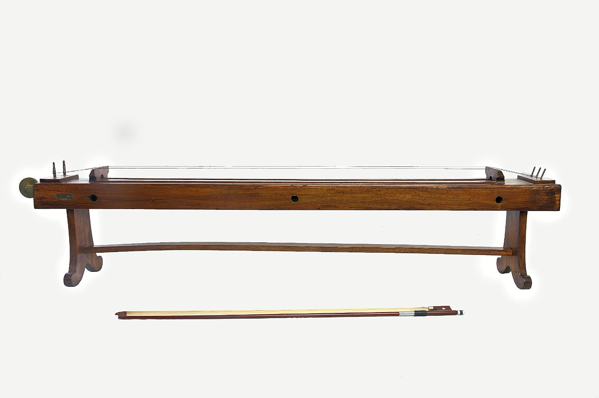

Sonometro
Scuola di provenienza: Liceo Statale "P.E. Imbriani", Avellino
Settore: Acustica
Costruttori: Benedetto Romano, Lecce
Materiali: Legno, ottone, ferro
Accessori: Manovella e pesetti
Stato di conservazione: Buono
Descrizione: Cassa sonora rettangolare a pareti sottili di legno di abete su cui le corde (di diversa sezione) alla distanza precisa di un metro possono essere tese mediante giri di vite o mediante pesi (in questo caso la corda passa nella gola di una carrucola) e produrre dei suoni della gamma musicale. La corda sonora è un filo di metallo o di budello di animale teso tra due punti fissi che pizzicata al centro o eccitata da un archetto di violino vibra tutta per intero presentando così un ventre nel centro e due nodi all´esterno, emettendo onde che fanno udire la nota fondamentale (primo armonico). Toccando leggermente al centro la corda ed eccitandola ad un quarto della sua lunghezza, si otterranno due fusi con un nodo nel centro della corda e di due ventri ad un quarto e a tre quarti emettendo l´ottava della nota fondamentale (secondo armonico), che è di frequenza doppia. Se si tocca la corda ad un terzo della sua lunghezza, eccitandola ad un sesto essa si divide in tre fusi con tre ventri e quattro nodi; ci da allora il terzo armonico di frequenza tripla. Si possono dunque ottenere da una corda tutti gli armonici della nota fondamentale. Gli “accorciamenti” della corda non sono fatti a caso ma in base ad una legge infatti danno accordi piacevoli quindi quei suoni che stanno fra di loro secondo numeri semplici. Col sonometro si può verificare la seguente legge: la frequenza delle vibrazioni di una corda è proporzionale: inversamente alla lunghezza e alla sezione della corda; direttamente alla radice quadrata del peso tensore. Quindi: a parità di tensione la corsa più grossa fa sentire un suono più basso; tendendo maggiormente una corda, si sente un suono più alto; un suono più alto si sente anche accorciando una corda (sottoponendovi un cavalletto); a tensione constante e a lunghezza uguale alla metà si ottiene l´ottava sopra della nota fondamentale; se la lunghezza è 2/3, si ottiene la quinta (rapporto de numeri di vibrazione 3/2); si rendono evidenti i ventri e i nodi sovrapponendo alla corda dei cavalierini di carta.